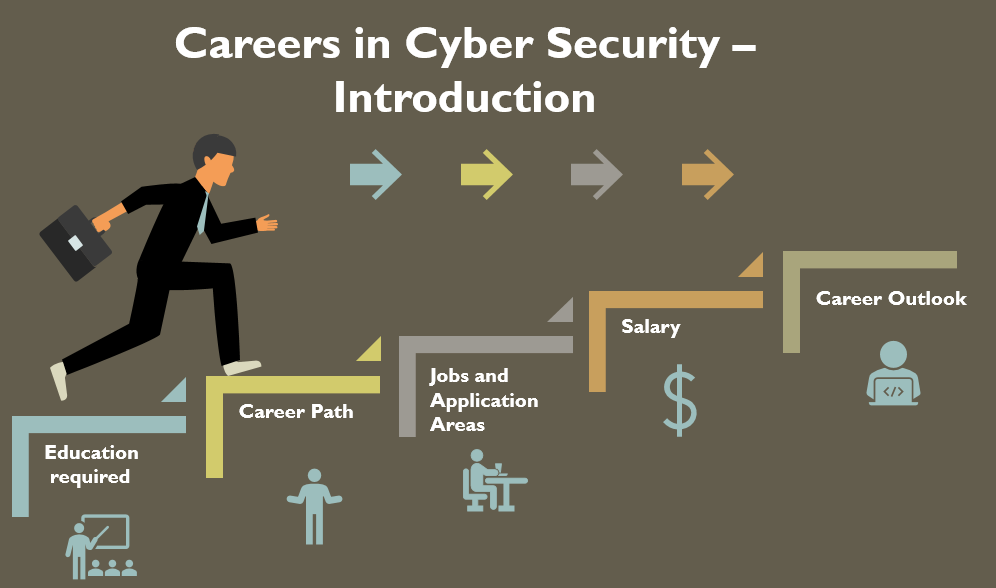
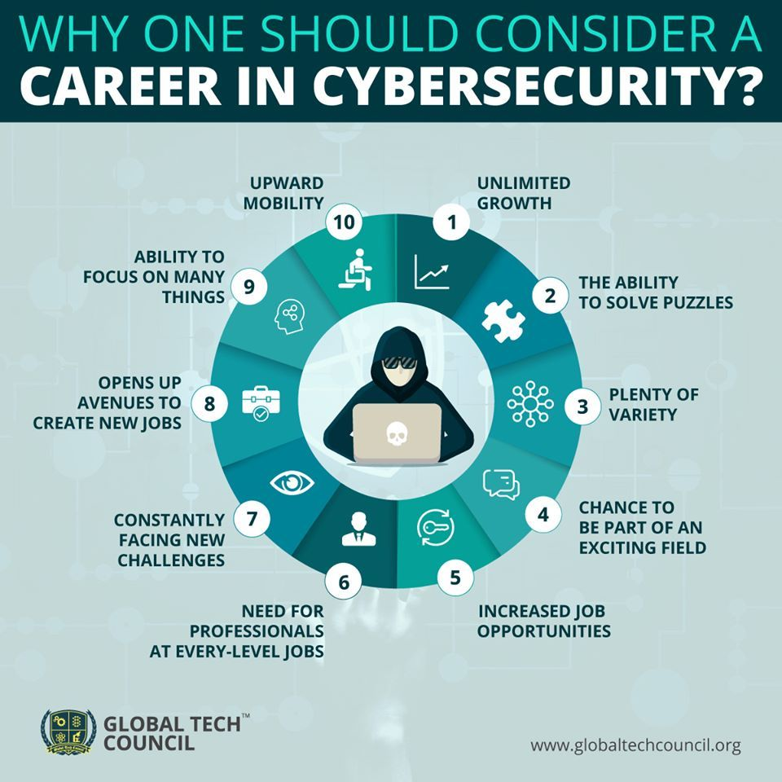
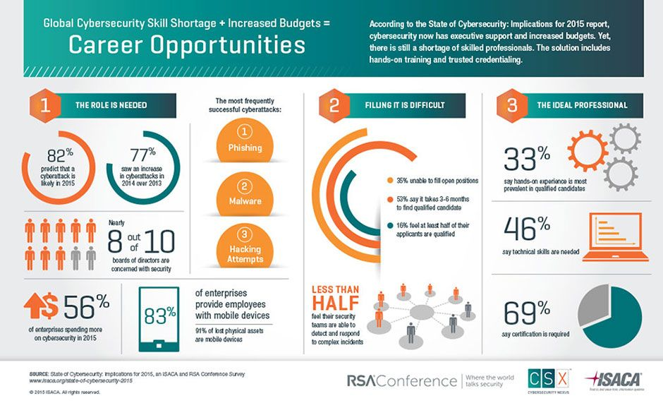

<html>
<head>
<title>Career</title>
<link rel="stylesheet" type="text/css" href="home.css">
<style>
.row
{
width:auto;
height:600px;
padding:20 20 20 20;
background-color:grey;
}
body{
margin:50px;
padding:10px;
border:10px solid black;

}
.c1
{
height:4000px;
width:1000px;
margin:20px 100px 20px 100px;
padding: 0px 100px 0px 100px;
font-size:20px;
float:center;
text-align:left;

background-color:#cce5ff;
}
.c2
{
height:500px;
width:1000px;
margin:20px 100px 20px 100px;
padding: 0px 100px 0px 100px;

float:center;
font-size:20px;
background-color:#f7b1d0;
}
.mySlides
{display: block;
margin-left: auto;
margin-right: auto;
}

.pic{

float:right;
padding:60 120 100 60;
}
</style>
</html>
<body>
<header>
cyber security consulting services
</header>

<div class="nav">
<ul>
<li><a href="head.html"><strong>HOME</strong></a></li>
<li><a href="cyber1.html"><strong>ALL ABOUT CYBER SECURITY</strong></a></li>
<li class="dd"><a href="services.html"><strong>SERVICES<strong></a>

</li>
<li class="dd"><a href="industry.html"><strong>INDUSTRY</strong></a>
</li>
<li><a href="about.html"><strong>ABOUT US</strong></a></li>
<li><a href="careers.html"><strong>CAREERS</strong></a></li>
<li><a href="contact.html"><strong>CONTACT US</strong></a></li>
</ul>
</div>

<div>
  
  
</div>

<script>
var myIndex = 0;
carousel();

function carousel() {
  var i;
  var x = document.getElementsByClassName("mySlides");
  for (i = 0; i < x.length; i++) {
    x[i].style.display = "none";  
  }
  myIndex++;
  if (myIndex > x.length) {myIndex = 1}    
  x[myIndex-1].style.display = "block";  
  setTimeout(carousel,2000); // Change image every 2 seconds
}
</script>

<h1><u>CYBERSECURITY CAREERS</u></h1>
<h2>The cybersecurity field encompasses a large variety of exciting, rewarding career paths. Cybersecurity salary expectations, job duties, and education requirements vary by career. Keep reading to learn more about some of the most popular cybersecurity jobs, including common tasks, average salaries, education and training requirements, and top-paying cities.
</h2><div class="c1">
<h1><u>Job Oppurunities</u></h1>
<h2>Chief InfoSec Officer</h2>
Chief information security officers occupy high-level roles as they protect their companies' data and manage IT and security issues. They work with other executives and IT security experts. These professionals need advanced business, technical, management, and organizational skills. They must also keep abreast of trends and current issues in information security.
</br>Required Education: Bachelor's required, master's recommended
</br>Average Annual Salary for CISOs: $162,037

<h2>Cryptographer</h2>
Cryptographers help organizations safely and securely communicate and exchange information. As cyberattacks and threats grow, the demand for skilled cryptographers who can protect valuable information may increase. Cryptographers typically work for government agencies, financial institutions, and healthcare organizations. Companies like Amazon, Google, and Apple also hire cryptographers.
</br>Required Education: Master's or Ph.D. preferred
</br>Average Annual Salary for Cryptologists: $73,067, based on available data

<h2>Forensics Expert</h2>
Forensics experts investigate computer and cyber crimes and help organizations protect sensitive data and information. Typical job duties may include educating employees about cybersecurity issues, identifying security weaknesses, retrieving data from systems and devices, and reconstructing information systems to understand data breaches. Sometimes forensics experts serve as expert witnesses in trials.
</br>Required Education: Bachelor's required
</br>Average Annual Salary for Forensic Computer Analysts: $73,892

<h2>Incident Responder</h2>
The incident responder includes jobs such as response engineer, cyber incident responder, computer network defense incident responder, and forensics intrusion analyst. Most incident response professionals respond to cybersecurity incidents and data breaches.
</br>Required Education: Bachelor's required, master's preferred
</br>Average Annual Salary for Incident Managers: $80,873

<h2>Penetration Tester</h2>
Penetration testers find vulnerabilities in networks, information systems, and web applications. They test established security systems and try to prevent cyberattacks. Penetration testers identify weaknesses by conducting their own simulated cyberattacks without actually making data vulnerable, a practice sometimes called ethical hacking.
</br>Required Education: Bachelor's or master's often required
</br>Average Annual Salary for Penetration Testers: $84,605

<h2>Security Administrator</h2>
Security administrators prevent organizations from cybersecurity threats and attacks. These professionals serve in high-level roles, overseeing the IT security efforts of their organizations. With the help of their team, they create policies and procedures, identify weak areas of networks, install firewalls, and respond to security breaches. Security administrators work in nearly every industry that relies on computer networks.
</br>Required Education: Bachelor's required, master's preferred for management positions
</br>Average Annual Salary for Security Administrator, IT: $66,969

<h2>Security Analyst</h2>
Security analysts protect organizations' data from cyberattacks. They typically need a bachelor's degree to enter the profession. The BLS reports that information security analysts earn a median annual salary of $99,730, with a 32% projected increase in jobs from 2018-2028. Security analysts work for public and private sector organizations in business, technology, and finance.
</br>Required Education: Bachelor's required
</br>Average Annual Salary for Security Analysts: $68,384

<h2>Security Architect</h2>
Security architects design, plan, and supervise systems that thwart potential computer security threats. They must find the strengths and weaknesses of their organizations' computer systems, often developing new security architectures. Job tasks may include budget preparation, allocation of personnel resources, management of IT teams, and report preparation.
</br>Required Education: Bachelor's required
</br>Average Annual Salary for Security Architect, IT: $123,687

<h2>Security Auditor</h2>
Security auditors assess and analyze computer security systems' efficiency and safety. They hold expertise in cybersecurity, computer and information technologies, and penetration testing. They test databases, administer audits, create reports, and advise organizations about steps they can take to make their computer systems more secure. Security auditors must understand organizational policies and government regulations about computer security.
</br>Required Education: Associate required, bachelor's may be preferred
</br>Average Annual Salary for IT Auditors: $67,352

<h2>Security Consultant</h2>
Security consultants use their expertise about IT and computer security issues to advise organizations about appropriate security measures. Typical job duties may include looking for potential security breaches, overseeing implementation of new security measures, and training employees to protect their organizations from security risks.
</br>Required Education: Bachelor's required
</br>Average Annual Salary for Information Security Consultants: $85,430

<h2>Security Director</h2>
Security directors oversee IT security staff, activities, budgets, and equipment. They often take charge of information security training, compliance, and human resources issues. Security directors also manage the systems that protect organizations' data, such as patient health records, customer bank accounts, and company secrets.
</br>Required Education: Bachelor's required, master's may be preferred
</br>Average Annual Salary for Security Directors: $85,728

<h2>Security Engineer</h2>
Security engineers create IT security systems to protect their organizations' systems and sensitive data from cyberattacks. Their main job duties include building intrusion detection systems and firewalls to stop attacks. Other tasks include conducting security assessments, tests, and risk analyses. They also deliver reports and make recommendations to executives.
</br>Required Education: Bachelor's required, master's helpful
</br>Average Annual Salary for Security Engineers: $90,745

<h2>Security Manager</h2>
As high-level professionals, security managers oversee the operations of their organizations' information security issues. They typically supervise IT administrators, analysts, and other staff who implement security measures. Typical duties may include hiring new staff, evaluating security plans, preparing budgets, and developing polices.
</br>Required Education: Bachelor's required, master's needed for some top positions
</br>Average Annual Salary for Security Manager, IT: $108,464

<h2>Security Software Developer</h2>
Security software developers create new technologies for programs and applications. They integrate security protocols into existing programs and applications to ensure software security. Security software developers must possess an advanced understanding of all aspects of software development as they often participate in the entire lifecycle of development.
</br>Required Education: Bachelor's required
</br>Average Annual Salary for Security Software Developers: $73,788

<h2>Security Specialist</h2>
Security specialists monitor existing security infrastructure to make sure their organizations remain safe from cyberattacks. Job duties include suggesting period improvements, running system checks, and researching potential new risks. Security specialists also test software permissions and firewalls, analyze network structures, and make recommendations to management.
</br>Required Education: Bachelor's required
</br>Average Annual Salary for Information Security Specialists: $76,358

<h2>Source Code Auditor</h2>
Source code auditors prevent security threats, identify coding mistakes, and eliminate inefficiencies. They also create reports on their findings and make recommendations for changes. Source code auditors examine individual lines of coding to find weaknesses, bugs, and syntax errors. They need expertise in database security, cryptography, networking, and computer forensics.
</br>Required Education: Bachelor's required
</br>Average Annual Salary for IT Auditors: $67,352

<h2>Vulnerability Assessor</h2>
Vulnerability assessors find weaknesses in computer systems and applications. They often present their findings in a formal vulnerability assessment that businesses can consult when making corrections or improvements. Required skills include mastery of multiple operating systems, computer hardware and software systems, and security frameworks.
</br>Required Education: Associate required, bachelor's or master's may be helpful
</br>Average Annual Salary for Security Assessors: $102,500, based on available data
</br>
</div>

<div class=c2>

<h1><u>Online Courses</u></h1>
<h2>Top Online courses to learn Cyber Security:</h2>
</br>1.Udemy
</br><a href="https://www.udemy.com/courses/search/?q=cyber%20security&src=sac&kw=cyber">www.udemy.com</a>
</br>
2.Coursera
</br><a href="https://www.coursera.org/courses?query=cybersecurity">www.coursera.com</a>
</br>
3.MIT University
</br><a href="https://executive-ed.mit.edu/cybersecurity/index.php?utm_source=DigDefynd&utm_medium=Affiliate&utm_campaign=B-365D_WW_AF_DigDefynd_CYB_ALWON">ed.mit.edu</a>
</br>
4.edX
</br><a href="https://www.edx.org/professional-certificate/uwashingtonx-essentials-cybersecurity">edx.org</a>
</br>
5.Pluralsight
</br><a href="https://www.pluralsight.com/search?q=cyber%20security&categories=course&clickid=yX1UFI14wxyOTgRwUx0Mo3QwUkiVDiQOa1Xk0w0&irgwc=1&mpid=1205423&aid=7010a000001xAKZAA2&utm_medium=digital_affiliate&utm_campaign=1205423&utm_source=impactradius">pluralsight.com</a>
</br>
</div> 
</p>
<div class="footer">
  <p>Powered by firm</p>
</div>

</body>
</html>